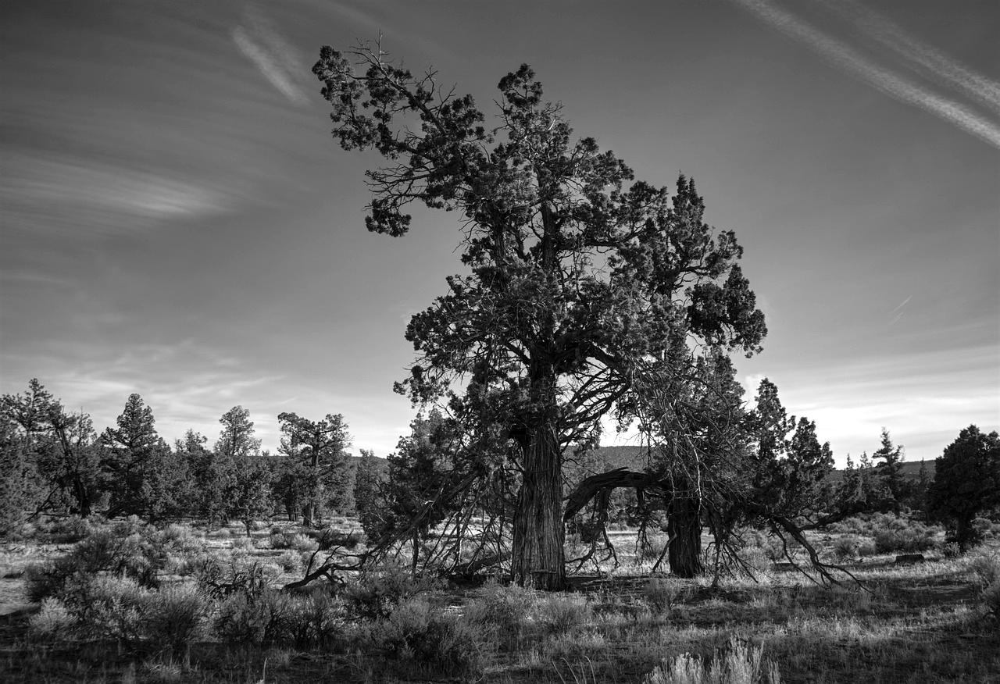

Oregon care leaders are naming where they want support.
We work with health systems, clinics, coordinated care organizations, tribal health programs and public partners across the state to surface shared priorities, then use them to decide what technology gets looked at and which pilots move forward.
The list below is the opening set, drawn from published Oregon health policy and workforce analysis and from the structure of the state's own rural programme. It becomes a live list once the first sessions run, and it is updated as priorities come in. Nothing here is a commitment by any named organisation.
The opening priorities.
Behavioural health and substance use capacity
Oregon's hardest and most public gap. Leaders point to crisis capacity, the wait between an assessment and a first appointment, and keeping someone engaged in the weeks after they leave a bed. In frontier counties the nearest provider can be in another county or another state.
- Crisis triage and routing
- Between visit engagement
- Measurement based care
- Peer and community workforce support
- Warm handoffs across organisations
Frontier distance and getting in the door
Ten counties hold six or fewer people per square mile. The problem is not only a shortage of clinicians, it is scheduling, transport, missed appointments and referrals that break between an outpost clinic and a specialty an hour and a half away.
- Triage and care routing
- Appointment matching
- Referral coordination
- No show reduction
- Transport and access support
Making the coordinated care model work at the edges
Oregon's coordinated care organizations carry a global budget and a quality pool. Rural members are the hardest to reach and the most expensive to miss. Leaders want tools that move the metrics a CCO is actually measured on, in the communities least likely to show up in them.
- Quality metric closure
- Risk stratification
- Member outreach that works offline
- Health related social needs
- Shared accountability across partners
Workforce capacity and administrative burden
Less paperwork, more capacity. Oregon's own workforce analysis puts rural and remote areas well below the state average on unmet need. Teams want time given back, documentation reduced and daily operations running with less friction, without adding another login.
- Documentation support
- Workflow automation
- Intake and scheduling
- Prior authorisation
- Training and supervision tools
Coordination across organisations that do not share a record
A transition out of a critical access hospital touches a CCO, a county behavioral health team, a tribal health programme and a home care agency, none of which sees the same screen. The need named most often is visibility across organisations rather than inside one.
- Transitions of care
- Referral tracking
- Interoperability
- Cross site coordination
- Real time operational signals
Rural financial sustainability
Small rural organisations deliver care management, community health integration and behavioral health integration every day and bill very little of it. Reimbursement capture is the difference between a service continuing and a service ending.
- Eligibility and documentation
- Care management billing
- Revenue cycle for small sites
- Grant and programme reporting
- Cost of care visibility
Tribal health, on tribal terms
Nine federally recognised tribes, each sovereign, each running or purchasing care differently. The priority here is set by tribal health leadership, not by us, and nothing in this programme touches tribal data without a tribal agreement that says so.
- Data sovereignty
- Community health workforce
- Access across long distance
- Programme reporting

Where these show up.
Seven settings. A priority that only holds in one of them is a project. A priority that holds across four is a Challenge theme.
01
Health systems and hospitals
Including the critical access hospitals that are the only inpatient capacity for whole counties.
02
Rural health clinics and physician groups
Often four to twelve staff, with no technology function of any kind.
03
Coordinated care organizations
Oregon's distinctive Medicaid structure, and the entity with the budget to act on a result.
04
Behavioural health providers
Where the state's most visible gap and its most active policy attention both sit.
05
Frontier care settings
Baker, Gilliam, Grant, Harney, Lake, Malheur, Morrow, Sherman, Wallowa and Wheeler.
06
Tribal health organizations
Participating on their own terms, with their own priorities and their own data rules.
07
Home and community based care
Including the community health workforce that reaches people no clinic sees.
Add a priority.
If you lead an Oregon care organization and the thing keeping you up is not on this list, send it. We will look for solutions against it and bring you what we find.